Nifi es un proyecto de Apache (desarrollado en Java inicialmente por la NSA, su nombre rinde tributo a los archivos Niagara - NiagaraFiles) que plantea un sistema distribuido dedicado a ingestar y transformar datos mediante un modelo en streaming.
Para ello, define un modelo de programación basado en flujos de datos, donde podemos definir aplicaciones como un conjunto de procesos (cajas negras) que intercambian datos utilizan mensajes, los cuales se envían entre conexiones predefinidas.
Entre sus características principales destacamos:
flujos de datos escalables.
más de 300 conectores.
procesadores personalizados.
ingesta de datos en streaming.
usa el paradigma de programación basado en flujos.
define las aplicaciones como grafos de procesos dirigidos (DAG) a través de conexiones que envían mensajes.
entrega garantizada sin pérdida de datos.
Las ventajas de utilizar Nifi son:
Linaje del dato
En la sesión de Arquitecturas de big data, ya vimos que el linaje de los nos permite conocer las transformaciones que ha sufrido un dato, desde el origen hasta el estado actual, incluyendo las combinaciones con otros datos o el cambio del dato en sí a lo largo de su ciclo de vida.
aplicación multiplataforma con licencia Open Source.
facilidad de uso mediante un interfaz gráfica y web.
escalabilidad horizontal mediante un cluster de máquinas.
evolución y comunidad.
política de usuarios (LDAP).
validador de configuraciones.
linaje y procedencia del dato.
Sus casos de uso son:
transferencias de datos entre sistemas, por ejemplo, de JSON a una base de datos, de un FTP a Hadoop, etc..
preparar y enriquecer los datos.
enrutar datos en función de características, con diferentes prioridades.
conversión de datos entre formatos.
En cambio, no es apropiado para:
procesamiento y operaciones de cómputo distribuido.
operaciones de streaming complejas con joins o agregaciones.
Para instalar Nifi, sólo hemos de descargar la última versión desde https://nifi.apache.org (en nuestro caso hemos descargado la version 1.19.1) y tras descomprimirla, debemos crear unas credenciales de acceso. Para ello, ejecutaremos el comando ./nifi.sh set-single-user-credentials <username> <password> indicando el usuario y contraseña que queramos.
Por ejemplo, nosotros hemos creado el usuario nifi/nifinifinifi:
Si quieres trabajar con una máquina en AWS has de seguir los siguientes pasos:
Crear una instancia EC2 (se recomienda elegir el tipo t3.large para tener 8GB RAM), con un grupo de seguridad que permita tanto las conexiones SSH como el puerto 8443.
Conectarnos via SSH a la ipPublicaAWS y descargar Nifi:
Tras meternos dentro de la carpeta recién creada, configurar el archivo conf/nifi.properties para permitir el acceso remoto. Para ello, modificaremos las siguientes propiedades:
Esperaremos un par de minutos tras arrancar Nifi para acceder al entorno de trabajo. Para ello, introduciremos en el navegador la URL https://localhost:8443/nifi y tras aceptar la alerta de seguridad respecto al certificado veremos un interfaz similar a la siguiente imagen:
Página de inicio en Nifi
Respecto al interfaz de usuario, cabe destacar cuatro zonas:
Menú superior: con los iconos grandes (procesadores, puertos de entrada y salida, etc...)
Barra de debajo con iconos: indican el estado de la ejecución (hilos, procesadores en marcha, detenidos, etc..)
Cuadro Navigate para hacer zoom
Cuadro Operate con las opciones del flujo de trabajo o del recurso seleccionado
En castellano se conocen como ficheros de flujo o FF: es básicamente el dato, el cual se persiste en disco tras su creación. Realmente es un puntero al dato en su almacenamiento local, de esta manera se acelera su rendimiento. El Flowfile a a su vez se compone de dos partes:
Encargado de ejecutar alguna transformación o regla sobre los datos o el flujo para generar un nuevo Flowfile. La salida de un procesador es un Flowfile que será la entrada de otro procesador. Así pues, para implementar un flujo de datos en NiFi, crearemos una secuencia de procesadores que reproduzcan las acciones y transformaciones que queremos realizar sobre sobre los datos.
Todos los procesadores se ejecutan en paralelo (mediante diferentes hilos de ejecución), abstrayendo la complejidad de la programación concurrente y además se pueden ejecutar en varios nodos de forma simultánea o bien en el nodo primario de un clúster.
Si bien es posible diseñar a mano un procesador, por defecto, NiFi ofrece un amplio catálogo con más de 300 procesadores, que cubre ampliamente las operaciones más frecuentes que se van a necesitar en un flujo de datos: añadir o modificar los atributos del FF, capturar cambios en una base de datos, cambiar de formato el contenido del FF (JSON, CSV, Avro…), extraer el contenido textual de un fichero, extraer el valor de un campo de un fichero JSON a partir de su ruta, extraer cabeceras de un email, consultar a ElasticSearch, geolocalizar una IP, obtener un fichero de una cola Kafka, escribir en un log, unir el contenido de varios FFs, realizar una petición HTTP, transformar un fichero XML, validar un fichero CSV, enviar mensajes a un web socket, etc.
Es una cola dirigida (con un origen y un destino que determinan un sentido) que une diferentes procesadores y contiene los FF que todavía no se han ejecutado, pudiendo definir diferentes prioridades (por ejemplo, FIFO o LIFO según necesitemos).
Así pues, los conectores van a unir la salida de un procesador con la entrada de otro (o un procesador consigo mismo, por ejemplo, para realizar reintentos sobre una operación).
Las conexiones se caracterizan y nombran por el tipo de puerto de salida del procesador del que nacen. En la mayoría de los casos nos enfrentaremos a conexiones de tipo success, que recogen el FF que devuelve un procesador cuando ha terminado satisfactoriamente su tarea, o de tipo failure, que conducen el FF en los casos en los que la tarea ha fallado. También podemos crear nuestros propios conectores.
Además, existe la posibilidad de configurar algunos aspectos de la conexión, como el número de FF que pueden viajar de forma simultánea por ella, la prioridad de salida de los FF que hay en la conexión, o el tiempo que los FF deben permanecer a la espera para ser recogidos por el procesador de destino.
Vamos a hacer un pequeño ejercicio con Nifi para familiarizarnos con el entorno desarrollando un flujo de datos sencillo que mueva un fichero de un directorio a otro.
A continuación detallamos los pasos a realizar:
Seleccionamos un procesador (primer icono grande) y lo arrastramos en nuestra área de trabajo.
Nos aparece un dialogo con tres partes diferenciadas:
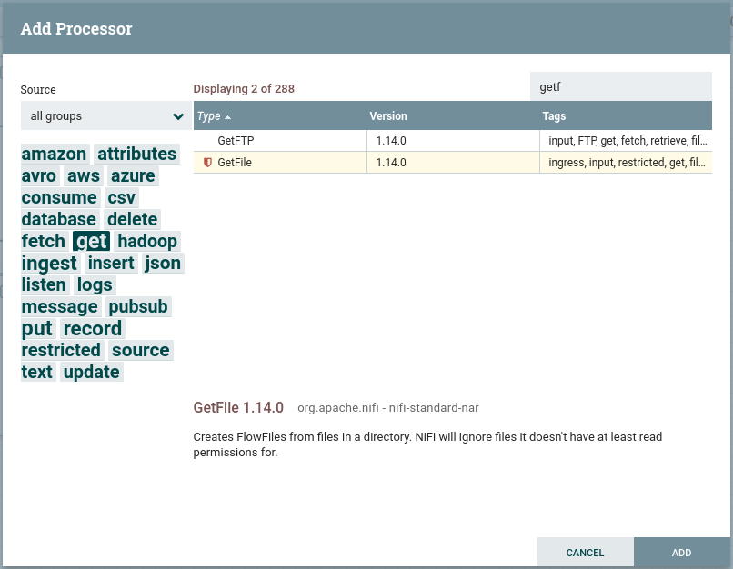
Diálogo de elección de procesador
A la izquierda una nube de etiquetas para poder filtrar los procesadores.
Arriba a la derecha tenemos un buscador para buscar procesadores por su nombre
La parte central con el listado de procesadores, desde donde lo podemos seleccionar.
Así pues, buscamos el procesador GetFile y lo añadimos al flujo, el cual permite recuperar un fichero desde una carpeta.
Damos doble click sobre el elemento gráfico que representa nuestro procesador, y en la pestaña properties indicamos el directorio de entrada de donde tendrá que recoger el fichero mediante la propiedad Input Directory. En nuestro caso le pondremos el valor /home/iabd/Documentos/in:
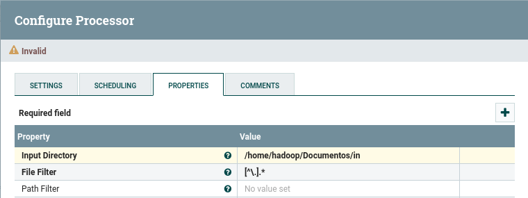
Propiedades de GetFile
Antes de cambiar de procesador, en la pestaña Settings, en la caja Name la rellenamos con ObtenerFichero.
Ahora añadimos un nuevo procesador de tipo PutFile, y en las propiedades indicamos el directorio de salida con la propiedad directory a /home/iabd/Documentos/out.
Si visualizamos la pestaña Settings, una buena práctica es ponerle nombre a los procesadores. Así pues, la caja Name la rellenamos con PonerFichero. Si nos centramos en el lado derecho, podemos configurar el comportamiento a seguir si el procesador se ejecuta correctamente (success) o falla (failure). Como vamos a hacer que este procesador sea el paso final, vamos a configurar que autoterminen marcando ambos casos:
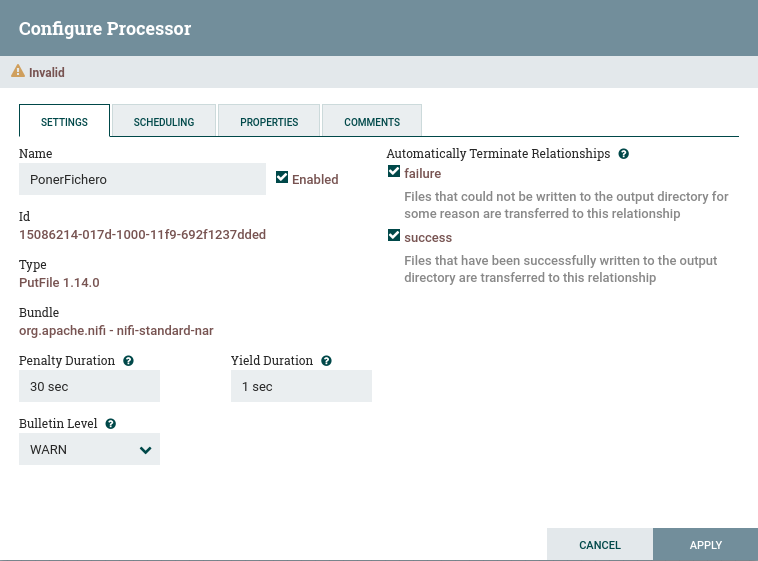
Finalización de PutFile
Terminar las relaciones
Si nos olvidamos de autoterminar las relaciones, o tenemos conexiones sin conectar, no podremos iniciar los procesadores implicados. Esto lo tenemos que realizar para todos los procesadores que tengamos en nuestro flujo de datos.
Unimos ambos procesadores creando una conexión. Para ello, tras pulsar sobre el icono de la flecha que aparece al dejar el ratón sobre el primer procesador y lo arrastramos hasta el segundo.
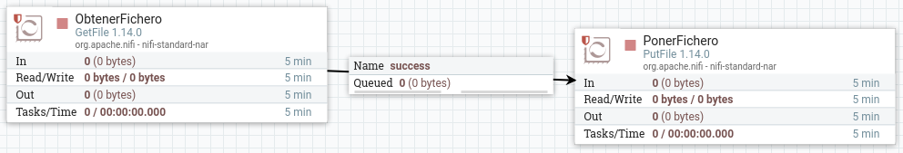
Conexión mediante un conector entre procesadores
Antes de arrancar el primer procesador, creamos un pequeño fichero en el directorio que hemos puesto como entrada:
echo"Hola IABD!">hola-iabd.txt
Arrancamos el procesador mediante el botón derecho y la opción Start, y comprobamos que el fichero ya no está en la carpeta in, y que sí aparece en la cola (Queued 1). También podemos comprobar como tampoco está en la carpeta out.
Finalmente, arrancamos el procesador de Poner Fichero, y veremos como la cola se vacía y el archivo aparece en la carpeta out.
¿Qué sucede si leemos dos veces un archivo con el mismo nombre? Tal como lo hemos definido en nuestro flujo, sólo se guardará la primera copia.
Si vamos a la pestaña Properties del procesador PonerFichero, podemos cambiar este comportamiento en la propiedad Conflict Resolution Strategy a replace, de esta manera, se guardará el último archivo.
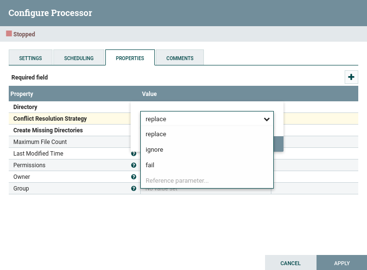
Propiedades de PutFile - gestión de conflictos
Realmente, en vez de decidir si lo ignora o lo sobrescribe, lo ideal es definir un nuevo flujo que dependa del estado de finalización del procesador. De esta manera, podremos almacenar todos los archivos que han llegado con el mismo nombre para su posterior estudio.
Así pues, vamos a quitar la autoterminación que antes habíamos puesto al procesador de PonerFichero, para que cuando falle, redirija el flujo a un nuevo procesador PutFile que coloque el archivo en una nueva carpeta (en nuestro caso en /home/iabd/Documentos/conflictos):
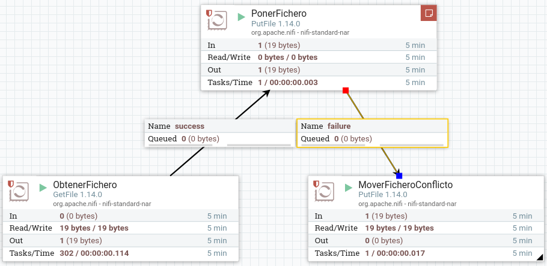
Flujo failure para los ficheros repetidos
Aunque ahora tenemos un mecanismo para almacenar los ficheros que coinciden en nombre, sólo nos guardará uno (nos sucede lo mismo que antes, pero ahora sólo con los repetidos).
Así pues, necesitamos renombrar los ficheros que vayamos a colocar en la carpeta conflictos para guardar el histórico. Para ello, necesitamos introducir un procesador previo que le cambie el nombre al archivo.
Nifi añade la propiedad filename a todos los FF. Esta propiedad la podemos consultar mediante el Nifi Expression Language (Nifi EL) y haciendo uso del procesador UpdateAttribute modificar su valor.
Así pues, vamos a colocar el procesador UpdateAttribute antes de colocar los archivos en la carpeta de conflictos:
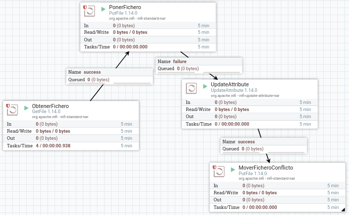
Añadimos el procesador UpdateAttribute
Hemos decidido añadir como prefijo al nombre del archivo la fecha del sistema en formato de milisegundos, de manera que obtendremos archivos similares a 1637151536113-fichero.txt. Para ello, añadimos un nuevo atributo que llamaremos filename haciendo clic sobre el icono de + que aparece arriba a la derecha y en su valor utilizaremos la expresión ${now():toNumber()}-${filename}:
Cada vez que se generan FF (representa un registro de datos que viaja por el flujo) estos van a tener asignados ciertos atributos por defecto. Entre estos atributos están el UUID o identificador único, su timestamp y el tamaño del fichero. Como ya hemos visto, mediante el uso de procesadores podremos modificar estos o añadir nuevos atributos.
Vamos a ver cómo hacerlo realizando los siguientes pasos:
Vamos a añadir un procesador del tipo GenerateFlowFile (este procesador crea FF con datos aleatorios o contenidos personalizados, lo cual es muy útil para testear y depurar nuestros flujos de datos).
En las opciones del procesador vamos a la pestaña de propiedades y completamos los campos:
Flow Size: 10 bytes
Batch Size: 1 para que nos genere un FF por cada ejecución
Data Format: Text
Unique Flowfiles: true e indicamos que los FF van a ser únicos.
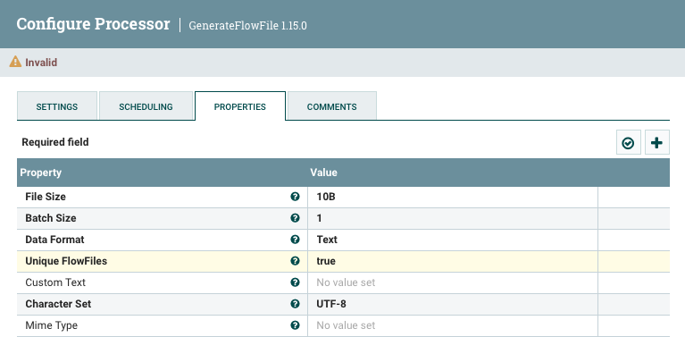
Configuración del procesador GenerateFlowFile
A continuación, en la configuración de planificación (Scheduling) de este procesador vamos a indicar que se ejecute cada 3 segundos (en el campo Run Schedule le ponemos como valor 3s).
Una vez tenemos listo el generador, vamos a añadir el procesador ReplaceText con el que cambiaremos el texto. Tras ello, conectamos ambos procesadores.
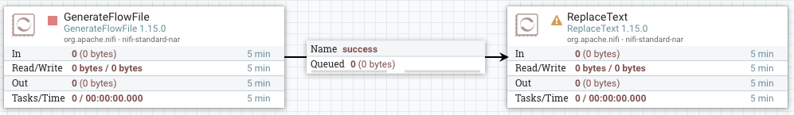
Conexión con ReplaceText
Si nos fijamos, a la izquierda del nombre del procesador, aparece un icono de aviso, el cual nos indica que necesitamos configurar el nuevo procesador, además de indicarnos que ambas relaciones no están conectadas o que faltan por autocompletar.
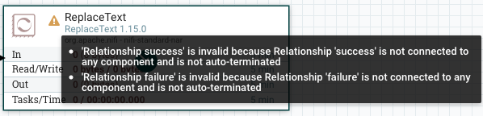
Avisos que aparecen en un Procesador
Para ello, configuramos la estrategia de reemplazo para que lo haga siempre (en el campo Replacement Value seleccionamos Always Replace), y al hacer esto el campo Search Value se invalida. Además, en el Replacement Value vamos a indicar simplemente prueba. Finalmente, marcamos para que autotermine la conexión failure.
Añadimos un procesador de tipo LogAttribute para mostrar en el log los atributos del FF, y conectamos el procesador anterior (ReplaceText) a éste mediante la relación success.
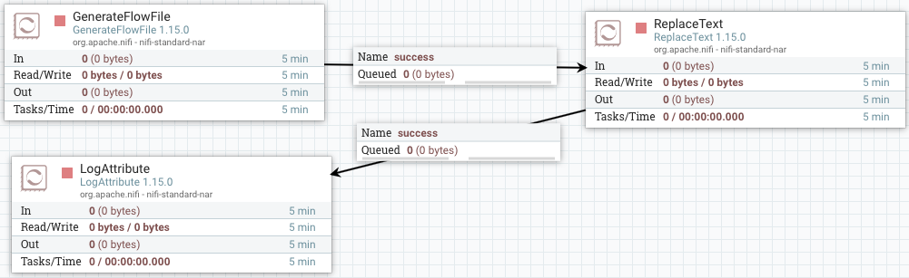
Log con los atributos
Arrancamos el primer procesador y visualizamos la cola para comprobar qué ha generado. Para ello, sobre la cola elegimos la opción list queue para ver su contenido, y tras elegir uno, sobre el icono del ojo, visualizamos su contenido y comprobado que ha generado datos aleatorios:
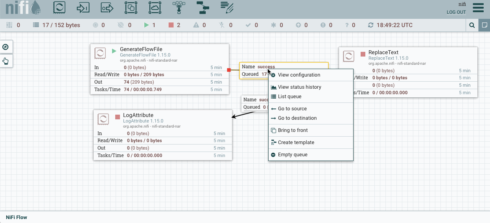
Acceso y visualización de la cola
Si ejecutamos el siguiente procesador, vemos que saca el FF de la cola anterior y aparecerá en la siguiente. Si comprobamos su valor, veremos que ha cambiado el valor original por prueba.
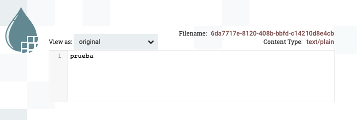
Resultado de visualizar la cola tras ReplaceText
Si accedemos al log de la aplicación (archivo nifi-app.log dentro de la carpeta logs) veremos mensajes similares a:
2021-11-17 19:12:37,446 INFO [Timer-Driven Process Thread-2]
o.a.n.processors.standard.LogAttribute LogAttribute
[id=2f300ff5-017d-1000-9020-2744e67e8d04]
logging for flow file StandardFlowFileRecord
[uuid=f4181825-f996-40c0-9e3c-a78326837d60,claim=StandardContentClaim
[resourceClaim=StandardResourceClaim
[id=1637174667410-1, container=default, section=1],
offset=7953, length=7],
offset=0,name=f4181825-f996-40c0-9e3c-a78326837d60,size=7]
--------------------------------------------------Standard FlowFile Attributes
Key: 'entryDate'
Value: 'Wed Nov 17 19:12:37 UTC 2021'
Key: 'lineageStartDate'
Value: 'Wed Nov 17 19:12:37 UTC 2021'
Key: 'fileSize'
Value: '7'
FlowFile Attribute Map Content
Key: 'filename'
Value: 'f4181825-f996-40c0-9e3c-a78326837d60'
Key: 'path'
Value: './'
Key: 'uuid'
Value: 'f4181825-f996-40c0-9e3c-a78326837d60'
--------------------------------------------------
Ahora vamos a extraer el contenido del FF a un atributo mediante el procesador ExtractText.
En las propiedades, creamos una nueva propiedad (botón + de la esquina superior derecha) que llamaremos contenido, y en cuyo valor vamos a poner la expresión .* que indica que queremos que coincida con todo.
Añadimos la propiedad contenido a ExtractText
Una vez creado, vamos a colocar este procesador entre los dos anteriores (para el segundo con el caso matched, que es cuando ha coincidido con la expresión regular). En la conexión unmatched la marcamos para que autotermine, y comprobamos que no tenemos ningún advertencia en ningún procesador.
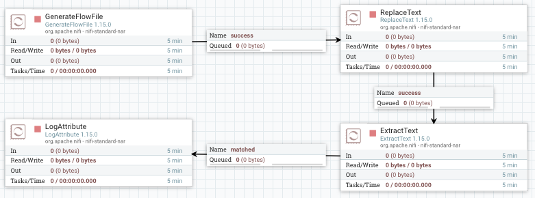
Flujo completo del caso 2
Finalmente, ejecutamos todos los procesadores y comprobamos como en el log aparece el nuevo atributo creado. También podemos acceder a la cola, y en la parte izquierda de cada flujo, en el icono de la i, pulsar y comprobar la pestaña Attributes.
Para comprobar el dato final, es muy útil utilizar la opción de Data provenance, la cual nos ofrece un linaje de los datos.
Linaje de los datos
El linaje de los datos describe el origen, movimientos, características y calidad de los datos, aportando visibilidad de punto a punto para incrementar la calidad de los datos. Se puede considerar como el historial de los datos, facilitando la documentación y gobernanza de los datos.
Para ello, sobre el procesador final, con el botón derecho, elegimos la opción View data provenance. Si elegimos uno de los flujos, a la derecha de cada flujo, podemos pulsar sobre el primer icono podremos ver un grafo y un slider que modifica el grafo respecto al instante temporal (en cada uno de los pasos, podemos hacer doble clik y ver la información y el contenido del FF en dicho momento exacto):
Si trabajásemos en una máquina externa a la instalación de Hadoop, deberemos copiar ambos archivos (core-site.xml y hdfs-site.xml) desde uno de nuestros nodos Hadoop a la máquina donde ejecutamos Nifi.
Para colocar los datos en HDFS, necesitamos utilizar el procesador PutHDFS y configurar las propiedades:
Hadoop configuration resources: con la ruta de los archivos de configuración de Hadoop, en nuestro caso: /opt/hadoop-3.3.1/etc/hadoop/hdfs-site.xml, /opt/hadoop-3.3.1/etc/hadoop/core-site.xml
Directory: con la carpeta de HDFS donde queremos almacenar los datos, por ejemplo, /user/iabd/nifi
Así pues, vamos a añadir este procesador unido de nuevo con la relación matched tras la extracción del texto, para que además de escribir en el log, persista todo el contenido en HDFS.
Utilizando Nifi, vamos a crear un nuevo fichero CSV que contenga únicamente los datos de Francia que han realizado más de una venta.
Para ello, tendremos que leer el fichero haciendo uso del procesador GetFile, separar cada fila en un FF mediante SplitRecord, filtrar los datos usando el procesador QueryRecord y finalmente los almacenaremos en disco gracias al procesador PutFile.
Así pues, comenzamos leyendo el fichero con el procesador GetFile. En este caso vamos a dejar la opción keep source file a true para que no lo elimine.
Trabajando con registros
En la siguiente sesión, trabajaremos con mayor profundidad con conjuntos de registros.
Mediante el procesador SplitRecord, vamos a separar cada fila del CSV a un FF. Para ello, primero hemos de crear un RecordReader y un RecordWriter para que sepa interactuar con el CSV (Nifi ya tiene varios implementados que podemos utilizar). Así pues:
En el Record Reader, seleccionamos Create new service, y elegimos CVSReader.
A su vez, en el Record Writer elegimos CVSRecordSetWriter.
Para configurar estos servicios, pulsaremos sobre la flecha, y veremos la pantalla de configuración. Para cada uno de ellos, tendremos otros tres iconos: la rueda para configurar, el rayo para activar/desactivar el servicio y la papelera para eliminarlo. Así, pues, tras comprobar los valores de CVSReader y CSVSWriter (indicamos el ; como separador de campos tanto para la lectura como la escritura de CSV en el campo value separator y marcamos como true que el archivo contiene la primera fila con encabezados (treat first line as header)), pulsamos sobre el rayo para activar ambos servicios.
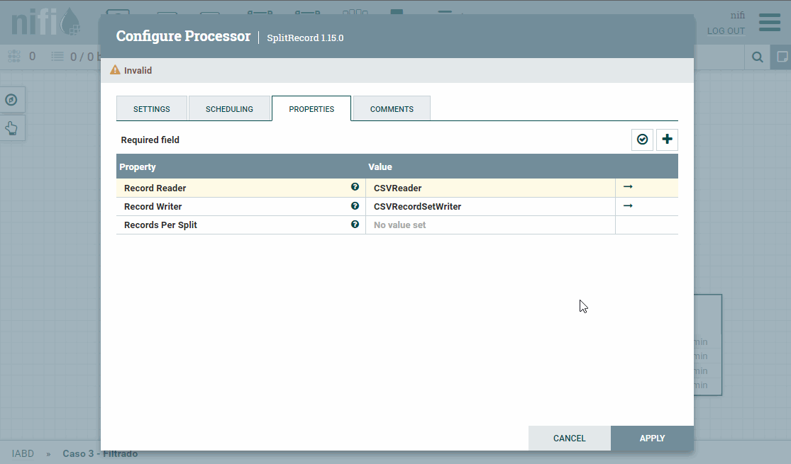
Configuración y activación de Split Record
Finalmente, en el campo Records per Split le indicamos 1 para que coloque cada fila en un FF.
En este paso, mediante el procesador QueryRecord vamos a ejecutar una consulta SQL contra el FF. El resultado del nuevo FF será el resultado de la consulta. En nuestro caso, como hemos comentado antes, vamos a quedarnos con las ventas de más de una unidad realizadas en Francia.
Igual que antes, configuramos los mismos Record Reader y Record Writer. Además, hemos de poner la propiedad Include Zero Record FlowFiles a false para que no vuelva a enrutar los FF que no cumplan la consulta.
Finalmente, añadimos una nueva propiedad para indicar la consulta. En nuestro caso la hemos denominado FranciaMayor1 y en el contenido ponemos la consulta:
También podríamos haber filtrado los campos para recuperar menos contenido con una consulta similar a select ProductID, Date from FlowFile ..... Con este procesador podemos filtrar, hacer agrupaciones, cálculos, del mismo modo que lo hacemos con SQL.
Finalmente, igual que hicimos en el caso 1, vamos a cambiarle el nombre a cada FF para generar un archivo por cada resultado mediante UpdateAttribute y persistimos los datos con PutFile.
El resultado del flujo de datos será similar a:
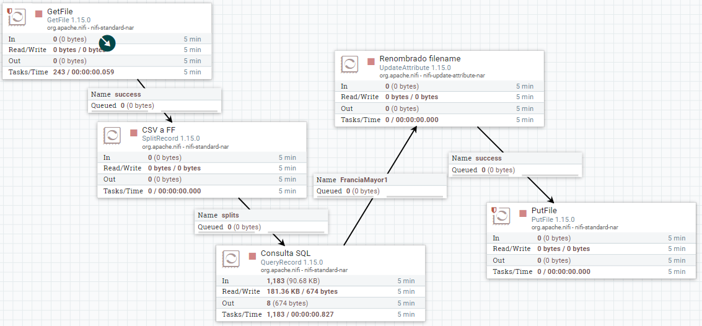
Flujo completo del caso 3
¿Realmente no podemos hacerlo mejor?
¿Hace falta generar tantos FF con los registros que cumplen la consulta? ¿No sería mejor fusionarlos en ficheros más grandes? Por ejemplo, después de hacer la consulta, podemos utilizar un procesador MergeRecord para unir los registros, por ejemplo, cada 10KB de datos (aunque si fuera un ejemplo real, estaríamos hablando de cientos de megas) y acumulando los FF entrantes, por ejemplo, durante un minuto.
¿Para qué hemos utilizado el SplitRecord si el procesador QueryRecord puede trabajar con un FF que contiene más de una fila? Así pues, podemos conectar el procesador GetFile directamente a QueryRecord y obtendríamos menos FF de resultado, concretamente como mucho por cada fichero que leyésemos (siempre que tuviera datos que cumplen la condición de la consulta).
Vamos a utilizar el procesador ListenHTTP para escuchar peticiones HTTP. Para ello, lo añadimos a nuestro flujo de trabajo y configuramos:
Listening port (puerto de escucha): 8081
Base Path (endpoint de la petición): iabd
A continuación, para distinguir entre los diferentes datos de entrada, utilizaremos el procesador RouteOnContent, con el objetivo de separar en dos flujos de datos, los que contienen la cadena error y los que no. Para ello, tras añadir el procesador, le conectamos al flujo success que viene de ListenHTTP, y configuramos:
Cambiamos el Match Requirement (requisito de coincidencia) a: content must contain match (no tienen que coincidir exactamente, sino contener el valor).
Y añadimos la propiedad textoError con el valor ERROR.
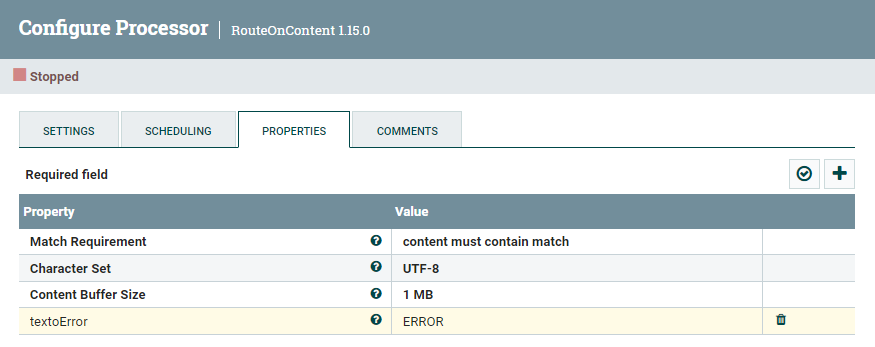
Propiedades de RouteOnContent
Para poder probarlo, arrancamos el primer procesador, y desde un terminal, hacemos una petición a:
curl--data"texto de prueba"http://localhost:8081/iabd
Si comprobamos la cola, podremos ver como se ha creado un FF cuyo contenido es texto de prueba.
Si nos fijamos en las propiedades del procesador RouteOnContent, tenemos dos flujos de salida textoError (para los mensajes que contienen el texto ERROR) y unmatched (para los que no).
Vamos a añadir el procesador MergeContent, el cual recibe un conjunto de FF y los fusiona en uno a partir de la estrategia de fusión que defina el usuario. Las diferentes opciones incluye agrupando ciertos atributos de forma similar a como se realiza la fase reduce de un algoritmo MapReduce.
Así pues, vamos a conectar las relaciones textoError y unmatched con MergeContent:
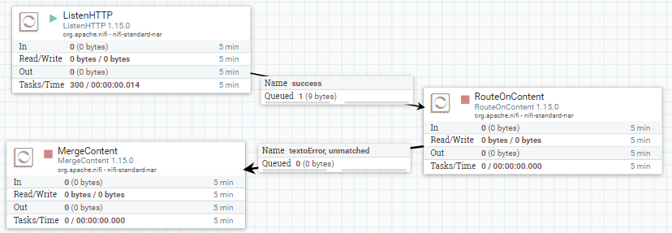
Conexión con MergeContent
Tras conectar los procesadores, vamos a configurar el procesador MergeContent:
En la pestaña de planificación, vamos a poner que el procesador se ejecuta cada 30 segundos para poder agrupar varios FF.
En las propiedades:
Merge Strategy: Bin-Packing Algorithm (se fusionan en grupos).
Merge Format: Binary Concatenation (concatena los contenidos de los FF en un único FF, otra opción sería comprimirlos en un zip)
Correlation Attribute Name: RouteOnContent.Route (crea diferentes grupos para textoError y unmatched)
Maximum Number of Entries: 1000 (cantidad máxima de elementos por grupo, por si tuviéramos muchas peticiones HTTP)
Maximum Bin Age: 300s (fuerza que el fichero fusionado salga como muy tarde a los 300s)
Delimiter Strategy: Text (para concatenar los fichero utilizando una nueva línea como carácter delimitador)
Demarcator: al abrir el campo, pulsar Shift/Mayús + Intro para poner el carácter del salto de línea.
Para poder probar cómo se van creando y agrupando los mensajes, ejecutaremos los siguientes comandos:
curl--data"texto de prueba"http://localhost:8081/iabd
curl--data"este sí que tiene ERROR"http://localhost:8081/iabd
curl--data"vaya ERROR más tonto"http://localhost:8081/iabd
curl--data"nifi mola mucho"http://localhost:8081/iabd
Por ejemplo, si abrimos uno de los flujos podemos ver cómo se han agrupado varias peticiones en un único FF:
Para almacenar el resultado de las fusiones anteriores, vamos a guardar los resultados en una colección de MongoDB.
Suponemos que ya tenemos instalado MongoDB en nuestro sistema, como es el caso de nuestra máquina virtual (recuerda arrancarlo mediante sudo service mongod start). Si no, podemos lanzarlo mediante Docker:
MongoDB + Nifi via Docker
Si queremos utilizarlo mediante Docker, necesitamos que MongoDB y Nifi estén dentro del mismo contenedor. Para ello, podemos configurarlo mediante el siguiente archivo docker-compose.yml (si tuvieras alguna problema con la imagen de MongoDB y tu procesador, prueba a cambiar la línea 15 mongo:latest por mongo:4.4):
Una vez creado el archivo, construimos el contenedor mediante:
docker-compose-pnifimongodbup-d
Para poder meter los mensajes en MongoDB, vamos a preparar el contenido para que esté en formato JSON. Además del contenido, vamos a crear un atributo con el nombre del enrutador utilizado para posteriormente poder filtrar los mensajes de error.
Para poder crear el formato JSON, utilizaremos el procesador AttributesToJSON. Así pues, previamente necesitamos pasar los mensajes desde el contenido de los FF a los atributos (para ello, igual que en el caso anterior, utilizaremos el procesador ExtracText). A su vez, también crearemos un nuevo atributo con el nombre del enrutador mediante el procesador UpdateAttribute.
El resultado final será similar al siguiente flujo:
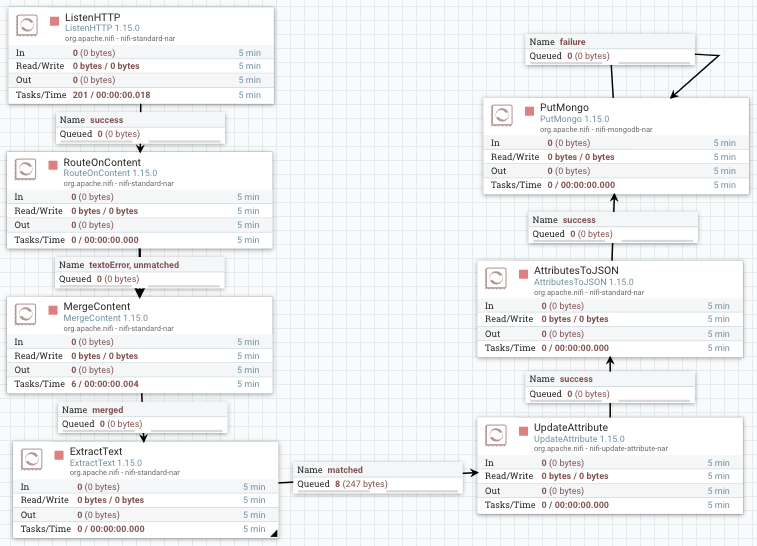
Resultado completo del caso 4
Utilizamos el procesador ExtracText para pasar el contenido a los atributos. Dentro de las propiedades configuraremos:
Enable DOTALL mode: true, para que incluya los saltos de línea como contenido.
Añadimos una nueva propiedad contenido, y como expresión regular introducimos (.*).
Una vez creado, conectamos MergeContent con ExtractText mediante la conexión merged, y el resto de conexiones las marcamos para que autoterminen.
Añadimos el procesador UpdateAttribute, y dentro de las propiedades, añadiremos una nueva propiedad que vamos a llamar estado cuyo valor será ${RouteOnContent.Route}, es decir, le ponemos el mismo que contenga el atributo RouteOnContent.Route.
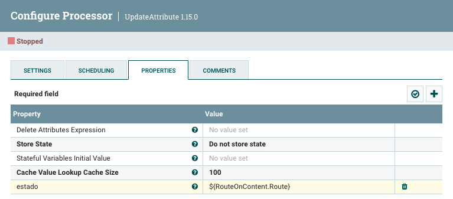
Creando el atributo estado
Una vez creado, conectamos ExtractText con UpdateAttribute mediante la conexión matched, y el resto de conexiones las marcamos para que autoterminen.
A continuación, vamos a utilizar el procesador AttributesToJSON para pasar los atributos contenidoy estado como contenido de un FF en formato JSON.
Para ello, configuramos las propiedades:
Attribute List: contenido,estado
Destination: flowfile-content
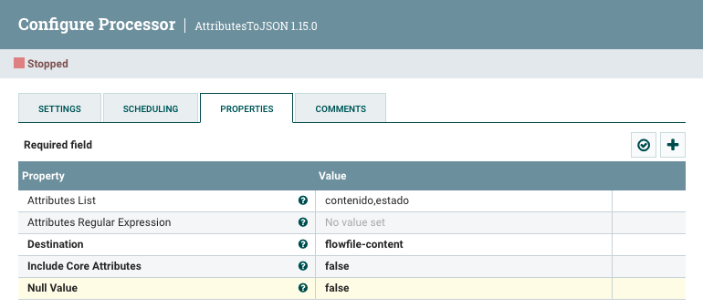
Creando el atributo estado
Una vez creado, conectamos UpdateAttribute con AttributesToJSON mediante la conexión success, y el resto de conexiones las marcamos para que autoterminen.
Si ejecutamos los procesadores anteriores y comprobamos la salida, veremos como se están creando FF cuyo contenido es la petición introducida más el estado:
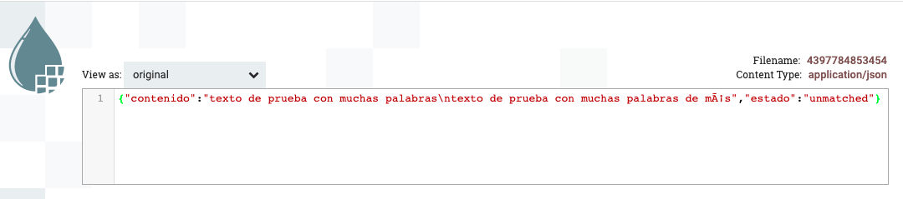
Mensaje JSON creado
Finalmente, añadimos el procesador PutMongo para introducir el contenido JSON. Las propiedades que hay que configurar son:
Mongo URI: mongodb://localhost
Mongo Database Name: iabd
Mongo Collection Name: caso4
En nuestro caso, hemos autoterminado la conexión success y reconectado con el mismo procesador la conexión failure.
Si arrancamos el flujo de datos completo, y tras realizar las mismas peticiones de antes:
curl--data"texto de prueba"http://localhost:8081/iabd
curl--data"este sí que tiene ERROR"http://localhost:8081/iabd
curl--data"vaya ERROR más tonto"http://localhost:8081/iabd
curl--data"nifi mola mucho"http://localhost:8081/iabd
Sólo nos queda entrar a MongoDB y comprobar que nos aparecen los datos:
>useiabdswitchedtodbiabd>db.caso4.find(){"_id":ObjectId("6197cca29c63ec4e825b8232"),"contenido":"este sí que tiene ERROR\nvaya ERROR más tonto","estado":"textoError"}{"_id":ObjectId("6197cca29c63ec4e825b8233"),"contenido":"texto de prueba\nnifi mola mucho","estado":"unmatched"}
En la entrega debes adjuntar una captura de pantalla donde se vea el flujo de datos completo con una nota con tu nombre, y adjuntar la definición de cada flujo (sobre el área de trabajo, con el botón derecho, Download flow definition).
(RA5075.1 / CE5.1b / 1p) Realiza el caso de uso 1, utilizando un fichero cuyo nombre sea el tuyo y adjunta capturas de la cola y su contenido al leer el fichero y antes de moverlo a la carpeta destino.
(RA5075.1 / CE5.1b / 1p) Realiza el caso de uso 2, pero en vez de llamar al atributo contenido denomínalo datos y almacena el resultado en HDFS en la ruta /user/iabd/nifi/caso2.
(RA5075.1 / CE5.1b y CE5.1d / 1p) Realiza el caso de uso 3, y compara el resultado de ejecutarlo al hacer que el SplitRecord contenga 10 filas para cada FF.
(RA5075.1 / CE5.1b y CE5.1d / 1p) Realiza el caso de uso 4. Una vez realizado nos hemos dado cuenta que no tenemos la fecha en la que se genera el mensaje. Así pues, añade un nuevo atributo fecha con el valor ${now()} y persiste dicho atributo en MongoDB.